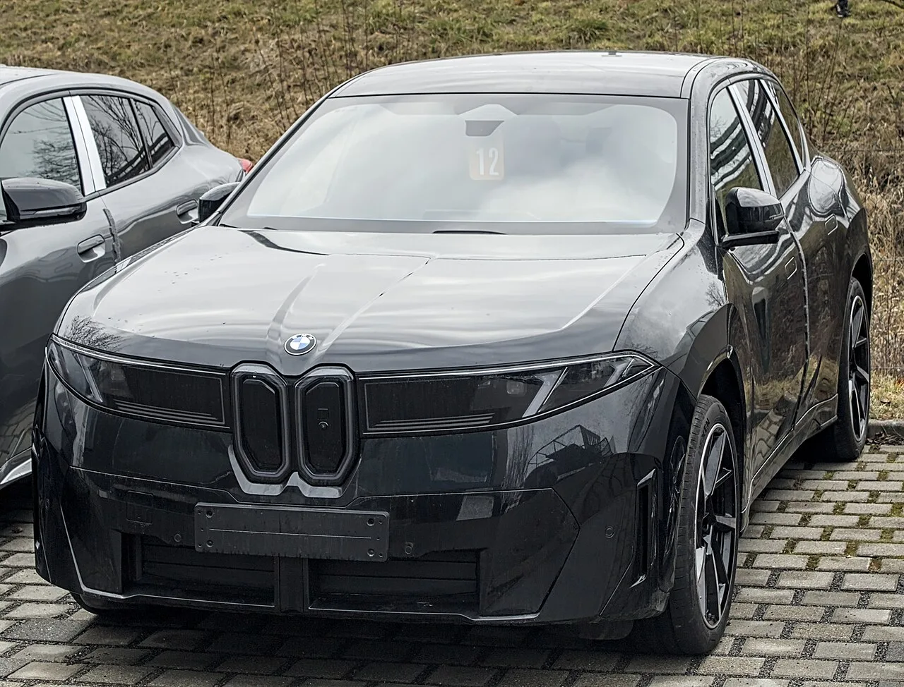

▲ BMW 신형 iX3. 노이에 클라세 아키텍처를 적용한 첫 양산 SUV다
BMW 신형 iX3를 사흘간 몰았습니다. 시승차는 M스포츠 트림이었습니다.
가장 먼저 언급해야 할 것은 출력도 주행거리도 아닙니다. 이전 X3와 구형 iX3가 어떤 차였는지 기억이 흐려질 만큼 주행 감성과 소프트웨어 수준이 달라졌다는 점입니다.
숫자부터 정리한 뒤, 실제로 체감되는 대목을 짚겠습니다.
1. 숫자 먼저 — 108.7kWh에 469마력
신형 iX3의 배터리는 108.7kWh입니다. 준중형 SUV 체급에서는 큰 축에 속합니다.
출력은 469마력, 토크는 65.8kg·m입니다. 공차중량이 2,360kg이니 가벼운 차는 아니지만, 이 정도 출력이면 무게가 문제로 다가오지 않습니다.
| 항목 | 제원 |
|---|---|
| 배터리 | 108.7kWh |
| 최고출력 | 469마력 |
| 최대토크 | 65.8kg·m |
| 공차중량 | 2,360kg |
| 국내 인증 주행거리 | 최대 611km |
| 가격(SE) | 7,990만 원 |
| 가격(M스포츠) | 8,690만 원 |
가격은 SE 7,990만 원, M스포츠 8,690만 원입니다. 그 위에 M스포츠 프로가 있습니다.
2. 주행거리 — 611km와 805km를 헷갈리면 안 된다
주행거리를 두고 두 개의 숫자가 돌아다닙니다. 국내 인증 최대 611km와 WLTP 805km입니다.
이 둘을 같은 선상에 놓으면 안 됩니다. 측정 기준이 다릅니다. WLTP는 유럽 기준이고, 국내 인증은 상온·저온 복합 측정에 보정 계수가 들어가 훨씬 보수적으로 나옵니다.
또 하나, 611km는 "최대"입니다. 휠 크기가 커지고 사양이 올라가면 인증치는 내려갑니다. M스포츠는 기본형보다 낮게 잡는 것이 안전합니다.
실제 시승에서는 사흘간 서울과 충청권을 왕복한 뒤에도 약 250km가 남았습니다. 공표 수치와 크게 어긋나지 않는 수준이었습니다.

▲ 신형 iX3. 국내 인증 최대 611km와 WLTP 805km는 측정 기준이 다르다
3. 에어 서스펜션 없이 만든 승차감
이번 시승에서 가장 놀란 대목입니다. 신형 iX3에는 에어 서스펜션도, 전자제어 서스펜션도 없습니다.
이 체급 전기 SUV에서 승차감을 확보하는 가장 흔한 방법이 에어 서스펜션입니다. 배터리 때문에 무거워진 하중을 감쇠력으로 눌러야 하기 때문입니다. 그런데 iX3는 그 장치 없이 부드러운 거동을 만들어냅니다.
노면의 잔진동을 걸러내는 방식이 인위적이지 않습니다. 감쇠력을 실시간으로 바꿔가며 잡아내는 느낌이 아니라, 기본 세팅 자체가 잘 잡혀 있다는 인상에 가깝습니다.
이는 원가 측면에서도 의미가 있습니다. 에어 서스펜션은 고장 시 수리비가 큰 부품입니다. 없는 편이 장기 유지비에서 유리한 경우도 있습니다.
4. 브레이크를 밟아도 안 풀리는 크루즈 컨트롤
소프트웨어에서 가장 인상적이었던 기능입니다.
보통 크루즈 컨트롤은 브레이크를 밟는 순간 해제됩니다. 안전 로직상 당연한 동작인데, 실제 장거리 주행에서는 불편합니다. 앞차 때문에 한 번 감속하면 다시 설정해야 하기 때문입니다.
신형 iX3는 브레이크를 밟아도 크루즈 컨트롤이 유지됩니다. 감속한 뒤 페달에서 발을 떼면 설정 속도로 복귀합니다.
고속도로 정체 구간에서 체감이 큽니다. 속도가 오르내리는 상황에서 매번 재설정하지 않아도 되기 때문입니다.

▲ 신형 iX3의 키드니 그릴. 노이에 클라세 디자인 언어가 반영됐다
5. 남는 문제 — 대기 기간
차 자체의 완성도와 별개로 실제 구매에서 걸리는 지점이 있습니다. 국내 출고 대기입니다.
신형 iX3는 국내에서 출고 지연 이슈가 이어지고 있습니다. 늦게 계약할수록 대기가 길어지는 구조입니다.
아무리 잘 만든 차라도 받는 시점이 1년 넘게 밀리면 구매 판단이 달라집니다. 계약 전에 대기 기간을 반드시 확인해야 합니다.

▲ iX3 50 후면. 완성도와 별개로 국내 출고 대기가 실제 구매의 변수로 남아 있다
6. 정리
신형 iX3는 108.7kWh 배터리에 469마력, 국내 인증 최대 611km를 갖췄습니다. M스포츠 기준 8,690만 원입니다.
다만 이 차의 진짜 강점은 스펙표에 잘 드러나지 않습니다. 에어 서스펜션 없이 만들어낸 승차감과 브레이크를 밟아도 유지되는 크루즈 컨트롤 같은, 실제로 매일 타면서 체감되는 완성도입니다.
기존 X3와 구형 iX3를 알던 사람일수록 차이가 크게 느껴질 겁니다. 남는 변수는 차가 아니라 출고 시점입니다.